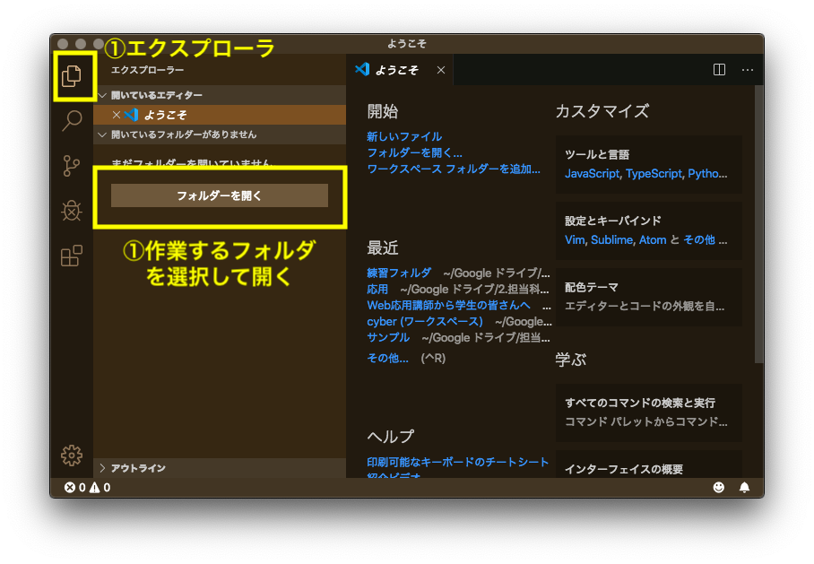
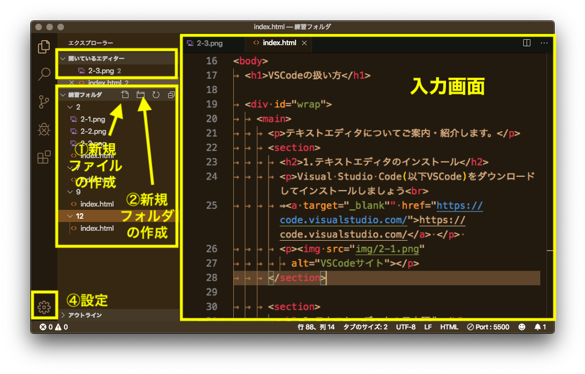
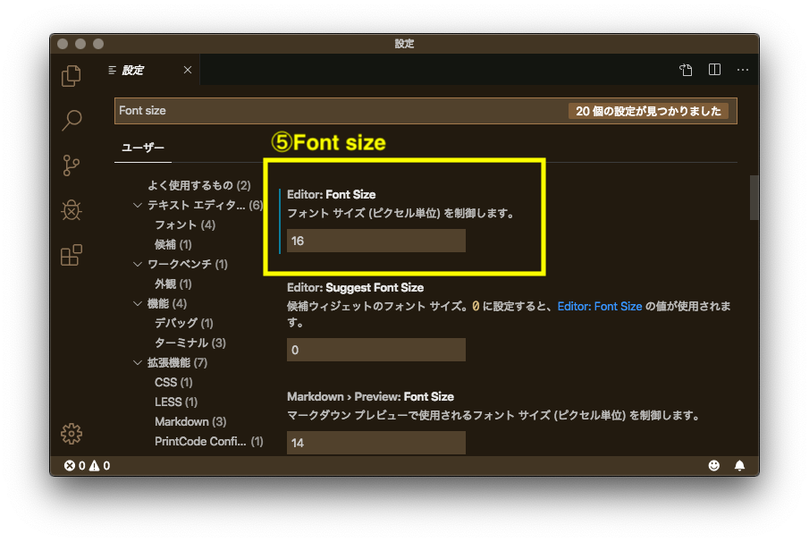
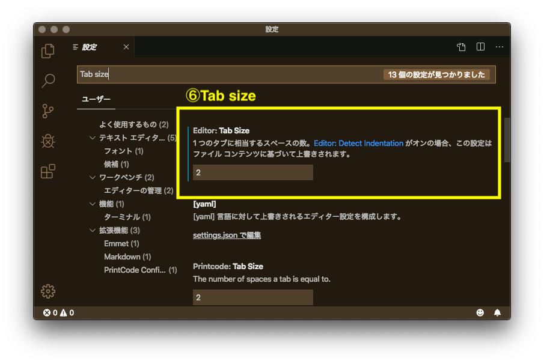
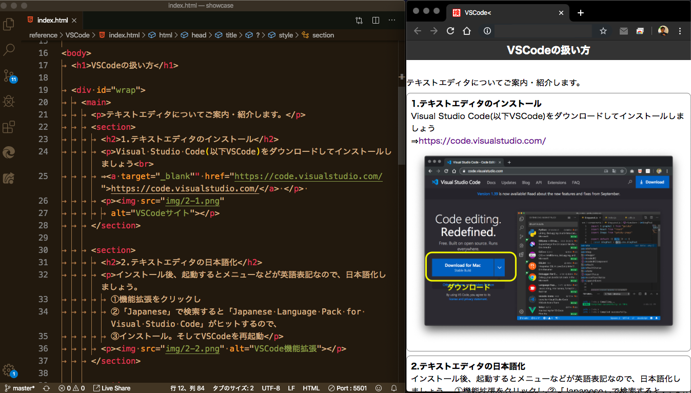
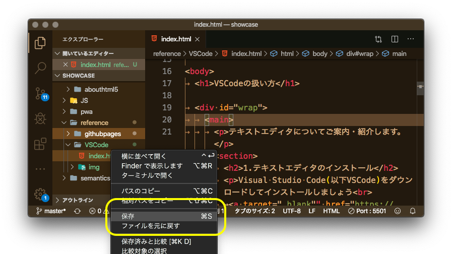

テキストエディタについてご案内・紹介します。
1.テキストエディタのインストール
Visual Studio Code(以下VSCode)をダウンロードしてインストールしましょう
⇒https://code.visualstudio.com/

2.テキストエディタの日本語化
インストール後、起動するとメニューなどが英語表記なので、日本語化しましょう。 ①機能拡張をクリックし ②「Japanese」で検索すると「Japanese Language Pack for Visual Studio Code」がヒットするので、 ③インストール。そしてVSCodeを再起動

3.ワークスペース(作業場)の確保
PC内のデスクトップやドキュメントフォルダ内に作業するためのフォルダを作成して、VSCode内の①エクスプローラをクリックし②作業するフォルダを選ぶ。

4.画面構成
ワークスペースの中に①ファイルを作成し(ファイルの拡張子は「.html」とすること)、必要に応じて②フォルダを作って整理、③入力画面でソースコードを書き込んでいきます。④の設定で、⑤VSCodeの文字の大きさ(Font size)や⑥Tabの大きさ、配色テーマ(=デザイン)などを変更することができます



5.VSCodeとブラウザの配置
画面を左右に並べて練習します。必要に応じてエクスプローラアイコンをクリックしてエクスプローラを閉じたほうがいいでしょう

6.ファイルの保存
[Ctrl](macは[command])と[s]を同時押しするか、①保存したいファイルを選んで右クリックし、コンテクストメニュの②保存を選びます

どうぞ試してみてください。なお、わからないこと・新しい発見があれば、任意ディベート「エディタお助けフォーラム」を利用して他の学友と情報をシェアしましょう。